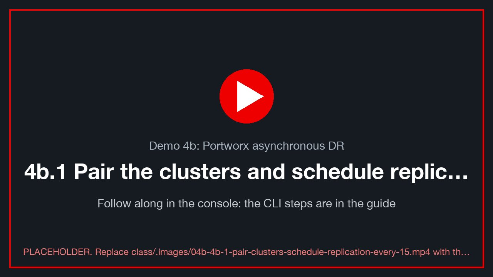
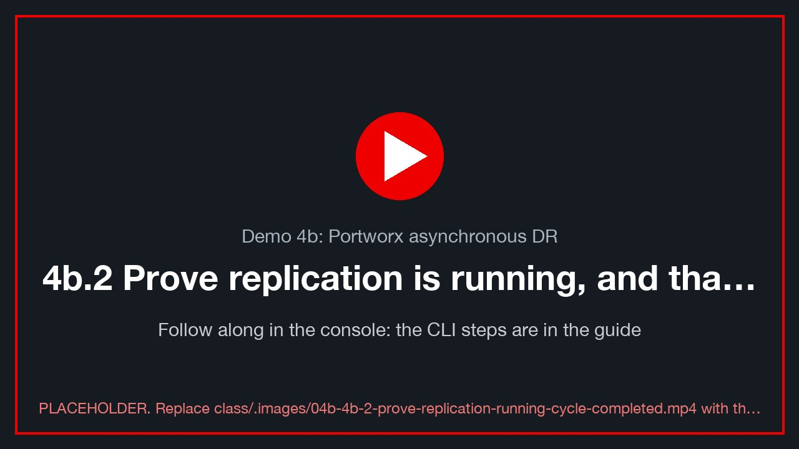
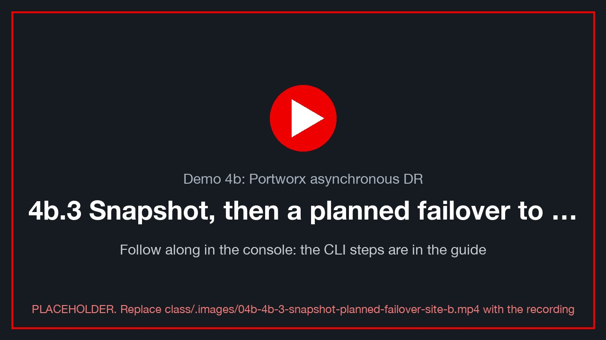
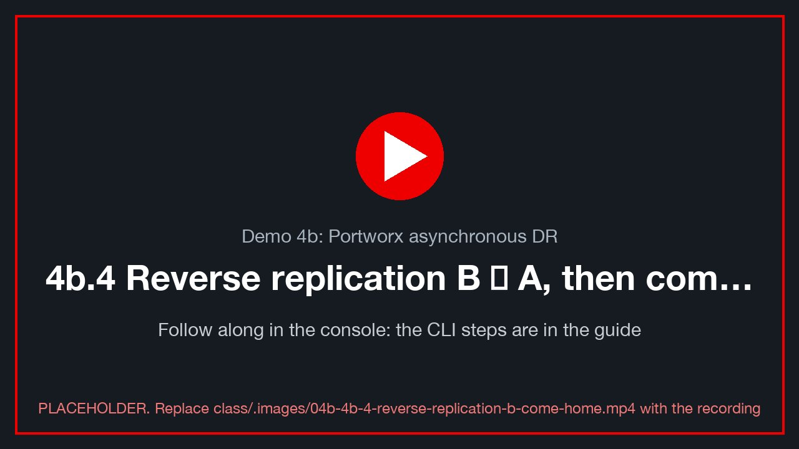
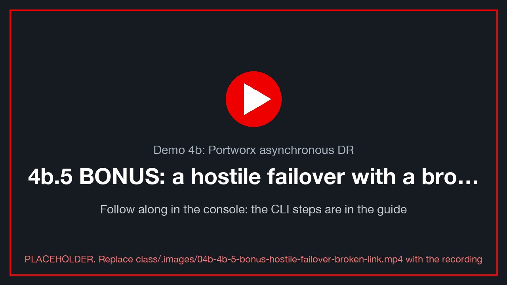

Demo 4b: Portworx asynchronous DR¶
Version 0.1.1 · framework · 2026-10-12 · class/demos/04b-portworx-dr.md
🚧 Framework: to be completed when Portworx is offered on the lab clusters. This guide has the shape of the demo and the stages it will have, but not its final commands. Every stage lists what still needs to be written (TODO). The few command shapes kept here are unproven [verify]. For a class today, use Demo 4 (ODF).
What you will learn¶
You will protect running virtual machines with Portworx Enterprise and PX-DR, which replicates their volumes asynchronously from site A to site B every 15 minutes. As in Demo 4, you will inject rows into PostgreSQL, prove that a replication cycle carried them across, move the VMs to site B and home again without losing a row, and compare how Portworx and ODF each run the same disaster-recovery story.
How the lab is set up for this demo (TBD)¶
The CI customization will have to pre-build the following. None of it exists yet.
- TODO: Portworx Enterprise on both sites. This needs a demo-openshift
storage: portworxoption, which is not offered today, and a PX-DR licence. - TODO: Stork and
storkctlon both clusters, plusstorkctlon the student workstation. - TODO: an S3 object store reachable from both sites, for the ClusterPair.
- TODO: a Portworx StorageClass for VM disks, and the MTV storage map pointing at it.
- TODO:
ovedr-app,sql-clientand a Service per student VM on both sites, as in Demo 4. - TODO: each student's VM (
$VM) running on site A on Portworx volumes, with its own address (Toolkit T.4). - See the lab diagram.
Before you start: do Lab 0, then sign your class terminal in on both sites and to your database (Toolkit T.1-T.2:
ocloginfor site A and site B, thendblogin). It already holds the variables ($ME,$N,$A,$B,$VM,$VM_IP,$WINUSER) and the commands (sql,mark,load,verify,alive,where).🖥️ Where you type the commands: your browser terminal. Every
bashblock in this guide runs in your own terminal pod, in the browser: in the site A console, project<your class ID>→ Workloads → Pods →sql-client→ Terminal (Toolkit T.1). Nothing is installed on your computer. It already knows your VM and its address (typeovedr);dbloginandoclogin(Toolkit T.1-T.2) stay signed in while the pod runs. Variables youexportlast until you close that Terminal tab: if you reopen it, re-run the guide'sexportlines. Paste with right-click → Paste (or Ctrl+Shift+V / ⌘V).powershellblocks run inside your Windows VM, from its console (vCenter Launch Web Console, or the VM's Console tab in OpenShift).
4b.1 Pair the clusters and schedule replication every 15 minutes¶
class/.images/04b-4b-1-pair-clusters-schedule-replication-every-15.mp4).
Intent: connect site A's Portworx to site B's, and replicate the ovedr-app namespace on a 15-minute schedule.
TODO
- Write the ClusterPair creation: storkctl create clusterpair from both kubeconfigs and the S3 credentials, then check that it reports Ready/Ready.
- Write the SchedulePolicy (15 min) and the MigrationSchedule for ovedr-app, with startApplications: false.
- Add the inject → verify checks and 📸 04b-clusterpair.
The probable command shapes [verify: Stork 23.x+ flags and API versions]:
storkctl create clusterpair ovedr-a-to-b --namespace ovedr-app \
--src-kube-file '<site-a kubeconfig>' --dest-kube-file '<site-b kubeconfig>' \
--provider s3 --s3-endpoint '<s3 endpoint>' --s3-access-key '<key>' --s3-secret-key '<secret>' \
--s3-region us-east-1 --unidirectional
apiVersion: stork.libopenstorage.org/v1alpha1
kind: SchedulePolicy
metadata: { name: ovedr-15m }
policy:
interval: { intervalMinutes: 15 }
---
apiVersion: stork.libopenstorage.org/v1alpha1
kind: MigrationSchedule
metadata: { name: ovedr-a-to-b, namespace: ovedr-app }
spec:
schedulePolicyName: ovedr-15m
template:
spec:
clusterPair: ovedr-a-to-b
namespaces: [ ovedr-app ]
includeResources: true
includeVolumes: true
startApplications: false # site B keeps a STOPPED copy until you fail over
4b.2 Prove replication is running, and that a cycle completed¶
class/.images/04b-4b-2-prove-replication-running-cycle-completed.mp4).
Intent: the same proof as Demo 4 §4.4. Inject a row, then wait for a successful cycle that started after it.
TODO
- Status reads: the MigrationSchedule status, each Migration's stage and bytes, and pxctl volume status (the jsonpaths are [verify]).
- A poll loop like Demo 4's: mark d4b-wait-for-sync, then poll until the last successful migration started after the mark's ts.
- 📸 04b-cycle-complete.
4b.3 Snapshot, then a planned failover to site B¶
class/.images/04b-4b-3-snapshot-planned-failover-site-b.mp4).
Intent: a clean, zero-loss move. Portworx has no single "Relocate". The move is stop → final migration → suspend → activate.
TODO - Take a local snapshot first (a VirtualMachineSnapshot, or a Portworx snapshot). - Write the four driver steps. The probable shapes [verify]:
virtctl --context site-a -n ovedr-app stop "$VM"
storkctl --context site-a create migration ovedr-final -n ovedr-app \
--clusterPair ovedr-a-to-b --namespaces ovedr-app --includeResources --startApplications=false
storkctl --context site-a suspend migrationschedule ovedr-a-to-b -n ovedr-app
storkctl --context site-b activate migration -n ovedr-app
- Checks on site B: refresh your address (Toolkit T.4), then
verifywithchain_ok = t, and read the touch file.
4b.4 Reverse replication B → A, then come home¶
class/.images/04b-4b-4-reverse-replication-b-come-home.mp4).
Intent: protect site B back to site A, then return home cleanly.
TODO
- A second ClusterPair plus a MigrationSchedule, B → A.
- The come-home sequence (the mirror of §4b.3), then resume the A → B schedule.
- End-of-demo validation: verify, ovedr_checksum, the touch file on each site, and proof table rows 4b.x.
- 📸 04b-home.
Thank you¶
Thank you for working through the Portworx DR demo. You protected the same application as in Demo 4 with a different storage platform, and you saw where the two approaches differ. To go further:
- Portworx documentation: https://docs.portworx.com
- Portworx disaster recovery (PX-DR): https://docs.portworx.com/portworx-enterprise/operations/disaster-recovery
- OpenShift Virtualization (OpenShift 4.19): https://docs.redhat.com/en/documentation/openshift_container_platform/4.19/html/virtualization/index
- Training: DO316, Managing Virtual Machines with Red Hat OpenShift Virtualization: https://www.redhat.com/en/services/training/do316-managing-virtual-machines-red-hat-openshift-virtualization
- Red Hat interactive labs: https://www.redhat.com/en/interactive-labs
4b.5 BONUS: a hostile failover with a broken link¶
class/.images/04b-4b-5-bonus-hostile-failover-broken-link.mp4).
Intent: as in Demo 4 §4.8, break replication, force site B up from the last completed cycle, measure the rows lost (the RPO), then repair the link and resync.
TODO
- Choose how to break the link. The candidates are: block site B's Portworx API from site A with a NetworkPolicy or firewall rule, or 🧑🏫 power off site A.
- The forced activation on site B. The probable shape is storkctl --context site-b activate migration -n ovedr-app [verify].
- RPO evidence: the ids you noted against what B holds, then the touch file.
- Repair, reverse resync and come home.
- 📸 04b-hostile-lost-rows.
How Demo 4b differs from Demo 4¶
| ODF Regional-DR (Demo 4) | Portworx PX-DR (Demo 4b) | |
|---|---|---|
| Orchestrator | ACM hub + Ramen (DRPolicy, DRPC) | Stork on each cluster (ClusterPair, MigrationSchedule) |
| Data path | Ceph RBD snapshot mirroring over Submariner | Portworx volume snapshots and diffs, pushed to the paired cluster |
| Reverse | automatic once the peer is ready | a second ClusterPair and schedule, B → A |
| Planned move | Relocate (one patch) |
stop → final migration → suspend → activate |